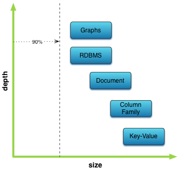
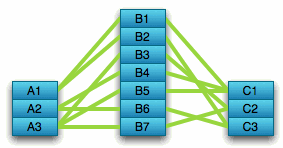
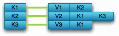
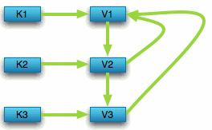
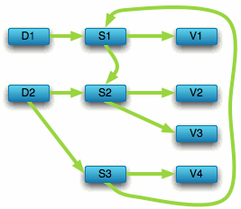

How Graph Databases Relate To Other NoSQL Data Models
We live in a connected world. There are no isolated pieces of information, but rich, connected domains all around us.
Nodes can be tagged with zero to many labels representing their different roles in the domain. In addition to contextualizing node and relationship properties, labels may also serve to attach metadata—index or constraint information, for example—to nodes.
Overview
- (Neo4j) –[:IS_A]–> (NoSQL Database)
- (A Graph Database) –[:TRANSFORMS_A]–> (RDBMS)
- (A Graph Database) –[:RELATES_A]–> (Key-Value Store)
- (A Graph Database) –[:NAVIGATES_A]–> (Document Store)
The NoSQL space is an interesting place, despite its unfitting name, which we see as "Not only SQL". It brings together many interesting solutions offering different data models and database systems.
Each one is suitable for different use cases and shapes of data. With the advent of the NoSQL movement, the "one-size-fits-all" proposition of large relational systems was replaced by making conscious decisions for the right tool for the job.
That also means that developers have to gain the necessary insight to make informed choices which approaches are best suited for the applications they work on.
Most NoSQL systems are aggregate oriented, providing only atomic operations within their natural aggregate which forms one dedicated view of your data. Other projections have to be computed crunching your data. Focusing on one aggregate at a time allows for easy sharding of bucketed data across a network of machines along the aggregate dimension, for instance the Document in Document Databases.
Graph databases handle fine grained networks of information providing any perspective on your data, fitting your use-cases. Known and trusted from relational systems, transactional guarantees protect updates of that web of data conforming to ACID standards.
Most NO-SQL databases store sets of disconnected aggregates. This makes it difficult to use them for connected data and graphs.
One well-known strategy for adding relationships to such stores is to embed an aggregate’s identifier inside the field belonging to another aggregate — effectively introducing foreign keys.
But this requires joining aggregates at the application level, which quickly becomes prohibitively expensive.
— Jim Webber, Ian Robinson
Let’s compare graph databases to other NoSQL systems.
(Neo4j) –[:IS_A]–> (NoSQL Database)
Not only SQL, but modern choices which excel at answering different kinds of questions.
- Average income? Ask a relational database.
- Shopping cart? Use a Key-Value Store.
- Structured product information? Store as a Document.
- How did you get here? Follow a Graph.

-
Recommended
(A Graph Database) –[:TRANSFORMS_A]–> (RDBMS)
Reconnect the rows of tables in a Relational Database by uncovering all the relationships, and you’ll see a graph. Dumb JOIN tables are replaced by interesting relationships.

Where a RDBMS is optimized for aggregated, highly structured data, Neo4j is optimized for highly connected heterogenuous data.

For several decades, developers have tried to accommodate connected, semi- structured datasets inside relational databases. But whereas relational databases were initially designed to codify paper forms and tabular structures — something they do exceedingly well — they struggle when attempting to model the ad hoc, exceptional relationships that crop up in the real world.
Ironically, relational databases deal poorly with relationships. Relationships do exist in the vernacular of relational databases, but only as a means of joining tables.
— Jim Webber, Ian Robinson
(A Graph Database) –[:RELATES_A]–> (Key-Value Store)
A Key-Value model is great and highly performant for lookups of huge amounts of simple or even complex values.

When the values are themselves interconnected, you’ve got a graph. Neo4j lets you traverse quickly among all the connected values and find insights in the relationships.

(A Graph Database) –[:NAVIGATES_A]–> (Document Store)
The structured hierarchy of a Document accommodates a lot of schema-free data that can easily be represented as a tree. Which is of course a graph but represents only one projection of your data.

Refer to other documents (or contained elements) within that tree and you have a more expressive representation of the same data that you can easily navigate with Neo4j. A graph data model lets more than one natural representation emerge dynamically as needed.

Stay Connected
Sign up to find out more about Neo4j's upcoming events & meetups.
© 2014 Neo Technology, Inc.
(graphs)-[:ARE]-›(everywhere)
With ♥ from Sweden & the Neo4j Community